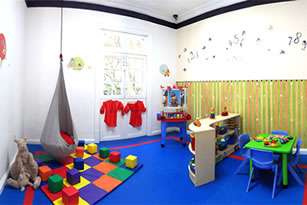
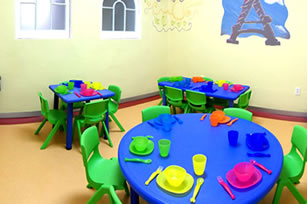
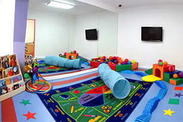
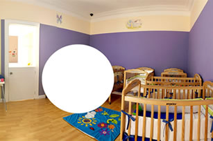
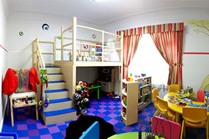

<!DOCTYPE html><html lang="es"><head><meta charset="utf-8"/><meta name="viewport" content="width=device-width, initial-scale=1"/><title>Guarderia Reforma | estimulacion temprana | infantil</title><meta name="keywords" content="Guarderia Reforma, estimulacion temprana, infantil, cuidado niños, centro infantil, guarderia, maternal, niños, educacion, cuidado infantil, jardin pre-escolar, estancia infantil, cuidado bebés, juegos infantiles"><meta name="description" content="Guarderia en Reforma, estimulacion temprana, cuidado niños, son palabras que describen a la guarderia infantil con servicio en estimulacion temprana, maternal, estimulacion temprana para niños desde bebes hasta grandes, en educacion y estimulacion temprana mira hacia el bien de los niños la estimulacion temprana apoya a bebes pues la estimulacion temprana para bebes, estimulacion temprana para niños, estimulacion temprana para niñas, estimulacion temprana para niños especiales"><link rel="canonical" href="http://kokundaycare.com.mx/daycare-preschool.html"><link rel="stylesheet" href="https://cdnjs.cloudflare.com/ajax/libs/bulma/0.5.1/css/bulma.min.css"/><link rel="stylesheet" href="https://maxcdn.bootstrapcdn.com/font-awesome/4.7.0/css/font-awesome.min.css"/><link rel="stylesheet" href="https://cdnjs.cloudflare.com/ajax/libs/slick-carousel/1.7.1/slick.min.css"/><link rel="stylesheet" href="https://cdnjs.cloudflare.com/ajax/libs/slick-carousel/1.7.1/slick-theme.min.css"/><link rel="stylesheet" href="https://cdnjs.cloudflare.com/ajax/libs/fancybox/3.1.20/jquery.fancybox.min.css"/><link rel="stylesheet" href="https://fonts.googleapis.com/css?family=Poppins:300,400,700"/><link rel="stylesheet" type="text/css" href="app/app.css"/><link rel="icon" type="image/png" href="favicon.png"/></head><body><div class="topbar"><div class="columns"><div class="column"><span class="slogan">Guardería en Polanco</span><span class="topbar-text"><a href="tel:68205500"><i class="fa fa-phone"></i><span>+52 (55) 6820 5500</span></a></span><span class="topbar-text"><a href="mailto:info@kokundaycare.com.mx"><i class="fa fa-envelope"></i><span>info@kokundaycare.com.mx</span></a></span></div></div></div><section class="section"><div class="container"><div class="navbar"><div class="navbar-brand"><a href=""></a><div class="navbar-burger" data-target="#mainMenu"><span></span><span></span><span></span></div></div><div class="navbar-menu" id="mainMenu"><nav class="navbar-end"><a class="active navbar-item" href="daycare-preschool.html">Nosotros</a><a class="navbar-item" href="guarderia.html">Servicios</a><a class="navbar-item" href="playgroups.html">Playgroups</a><a class="navbar-item" href="educacion-infantil.html">Educación</a><a class="navbar-item" href="talleres-infantiles.html">Kokun Kids</a><a class="navbar-item" href="cuidado-infantil.html">Contacto</a></nav></div></div></div></section><div class="container"><div class="notification is-orange has-text-centered">SOBRE NUESTRA GUARDERÍA</div></div><section class="section"><div class="container"><div class="columns"><div class="column is-6 is-offset-3"><h2 class="has-text-centered text-purple">Aquí nos ocupamos de querer y cuidar a tu pequeño como si fuera nuestro</h2></div></div><div class="columns"><div class="column is-5 is-offset-1"><p>Un grupo de personas y especialistas en educación temprana y preescolar brindando todo nuestro amor y respeto a cada uno de los pequeños a nuestro cuidado. Nos esmeramos en conocer a cada niño y niña, desde sus hábitos de dormir, hasta la comida que más les gusta.</p><h4 class="text-orange mt mb is-size-5">“Cada niño es especial y todos los días nos encargamos de brindarle el cariño y atención que merece.”</h4></div><div class="column is-5"><p>Trabajamos todos los días para que a través del amor, respeto y confianza se conviertan en seres humanos de valores extraordinarios </p><h4 class="text-blue mt mb is-size-5 has-text-centered">“Sabemos lo importante que es tu pequeño para ti.”</h4><p>Por ello, desarrollamos un espacio donde tus hijos pueden estar desde los 45 días hasta los 6 años de edad. Aquí aprenderán sobre sí mismos y el mundo que los rodea en un ambiente de amor.</p></div></div></div></section><section class="section is-blue"><div class="container"><div class="columns"><div class="column is-6"><h2 class="text-white">En Kokun los valores son</h2></div></div><div class="columns slick-valores-menu"></div><div class="valores-slider-menu"><h2 class="is-size-5 has-text-centered-mobile">Amor</h2><h2 class="is-size-5 has-text-centered-mobile">Compromiso</h2><h2 class="is-size-5 has-text-centered-mobile">Seguridad</h2><h2 class="is-size-5 has-text-centered-mobile">Respeto</h2><h2 class="is-size-5 has-text-centered-mobile">Comunicación</h2><h2 class="is-size-5 has-text-centered-mobile">Excelencia</h2></div><div class="valores-slider mt2"><div><div class="columns"><div class="column is-5 is-offset-1"></div><div class="column is-3 mt2"><h4 class="is-size-3">Amor</h4><p>En Kokun, nos ocupamos de querer y cuidar a los pequeños como si fueran nuestros.</p></div></div></div><div><div class="columns"><div class="column is-5 is-offset-1"></div><div class="column is-3 mt2"><h4 class="is-size-3">Compromiso</h4><p>En Kokun, nos ocupamos de querer y cuidar a los pequeños como si fueran nuestros.</p></div></div></div><div><div class="columns"><div class="column is-5 is-offset-1"></div><div class="column is-3 mt2"><h4 class="is-size-3">Seguridad</h4><p>En Kokun, nos ocupamos de querer y cuidar a los pequeños como si fueran nuestros.</p></div></div></div><div><div class="columns"><div class="column is-5 is-offset-1"></div><div class="column is-3 mt2"><h4 class="is-size-3">Respeto</h4><p>En Kokun, nos ocupamos de querer y cuidar a los pequeños  como si fueran nuestros.</p></div></div></div><div><div class="columns"><div class="column is-5 is-offset-1"></div><div class="column is-3 mt2"><h4 class="is-size-3">Comunicación</h4><p>En Kokun, nos ocupamos de querer y cuidar a los pequeños  como si fueran nuestros.</p></div></div></div><div><div class="columns"><div class="column is-5 is-offset-1"></div><div class="column is-3 mt2"><h4 class="is-size-3">Excelencia</h4><p>En Kokun, nos ocupamos de querer y cuidar a los pequeños  como si fueran nuestros.</p></div></div></div></div></div></section><section class="section"><div class="container"><div class="columns"><div class="column is-6"><h2 class="text-green">Nuestras instalaciones</h2></div></div><div class="columns"><div class="column is-10 is-offset-1"><p>Contamos con una combinación de espacios contenidos que proveen Interacciones sociales y experiencias nuevas, exploración segura y el juego físico.</p></div></div></div><div class="columns mt2"><div class="column is-10 is-offset-1"><div class="columns is-multiline"><div class="column is-4"><a class="is-blue instalaciones-item" href="app/img/kokun-instalaciones-1.jpg" data-fancybox><figure class="media"></figure></a></div><div class="column is-4"><a class="is-green instalaciones-item" href="app/img/kokun-instalaciones-2.jpg" data-fancybox><figure class="media"></figure></a></div><div class="column is-4"><a class="is-purple instalaciones-item" href="app/img/kokun-instalaciones-3.jpg" data-fancybox><figure class="media"></figure></a></div><div class="column is-4"><a class="is-orange instalaciones-item" href="app/img/kokun-instalaciones-4.jpg" data-fancybox><figure class="media"></figure></a></div><div class="column is-4"><a class="is-red instalaciones-item" href="app/img/kokun-instalaciones-5.jpg" data-fancybox><figure class="media"></figure></a></div></div></div></div></section><section class="section contamoscon is-orange"><div class="container"><div class="columns"><div class="column is-6 is-offset-3"><h2 class="has-text-centered text-white">Contamos con</h2></div></div><div class="columns is-multiline"><div class="column is-3 has-text-centered"><p>Paramédico</p></div><div class="column is-3 has-text-centered"><p>Seguro de AP Escolares</p></div><div class="column is-3 has-text-centered"><p>Programas inclusivos</p></div><div class="column is-3 has-text-centered"><p>Nutrición</p></div><div class="column is-3 has-text-centered"><p>Escuela para padres</p></div><div class="column is-3 has-text-centered"><p>Psicóloga</p></div><div class="column is-3 has-text-centered"><p>Playgroups</p></div><div class="column is-3 has-text-centered"><p>Evaluación trimestral</p></div></div></div></section><div class="is-purple"><div class="container"><div class="columns"><div class="column is-6 is-offset-3"><h2 class="has-text-centered text-white mt2 mb2">55 33 75 10  y  55 33 86 61</h2></div></div></div></div><footer class="footer"><div class="container"><div class="columns"><div class="column is-4"><h5 class="is-size-4 text-blue">Sucursal Reforma</h5><p>Río Rhin No. 47, Col Cuahutémoc, <br> CP 06500, Ciudad de México, CDMX. <br>Tel. 55 33 75 10 y 55 33 86 61</p></div><div class="column is-4"><h5 class="is-size-4 text-blue">Sucursal Polanco</h5><p>Calle Julio Verne 18, Polanco V Sec, <br> CP 11560 Ciudad de México, CDMX. <br> Tel. 5280 7514 </p></div><div class="column is-4"><h5 class="is-size-4 text-blue">Contacto</h5><div class="level"><div class="level-item"><a class="fa fa-facebook is-green" href="https://www.facebook.com/KokunDayCare/" target="_blank"></a></div><div class="level-item"><a class="fa fa-twitter is-green" href="https://twitter.com/kokundaycare" target="_blank"></a></div><div class="level-item"><a class="fa fa-google-plus is-green" href="https://plus.google.com/102833441639096713965" target="_blank"></a></div></div></div></div></div></footer><script src="https://cdnjs.cloudflare.com/ajax/libs/jquery/3.2.1/jquery.min.js"></script><script src="https://cdnjs.cloudflare.com/ajax/libs/slick-carousel/1.7.1/slick.min.js"></script><script src="https://cdnjs.cloudflare.com/ajax/libs/fancybox/3.1.20/jquery.fancybox.min.js"></script><script src="app/app.js"></script><script src="http://livejs.com/live.js"></script></body></html>